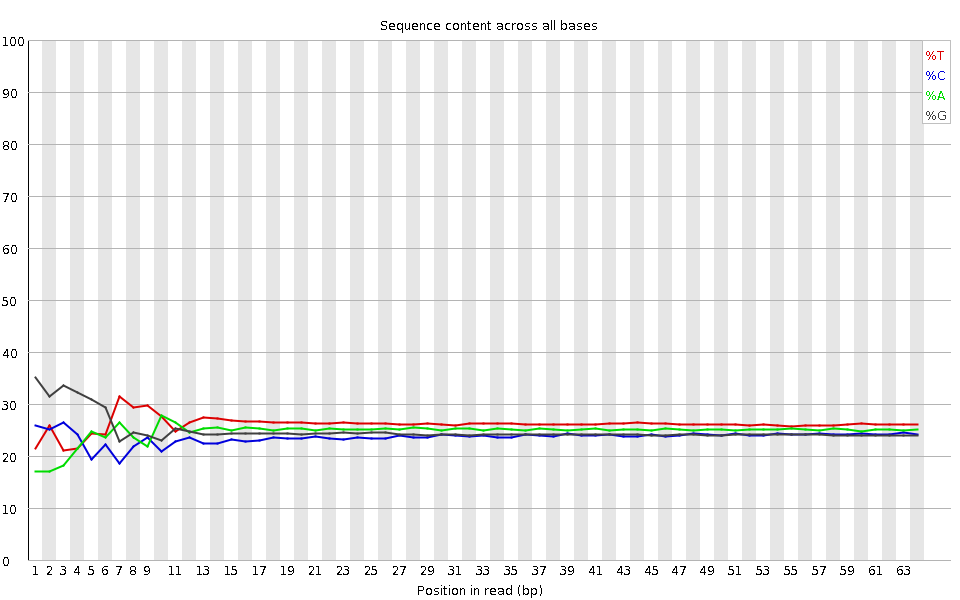
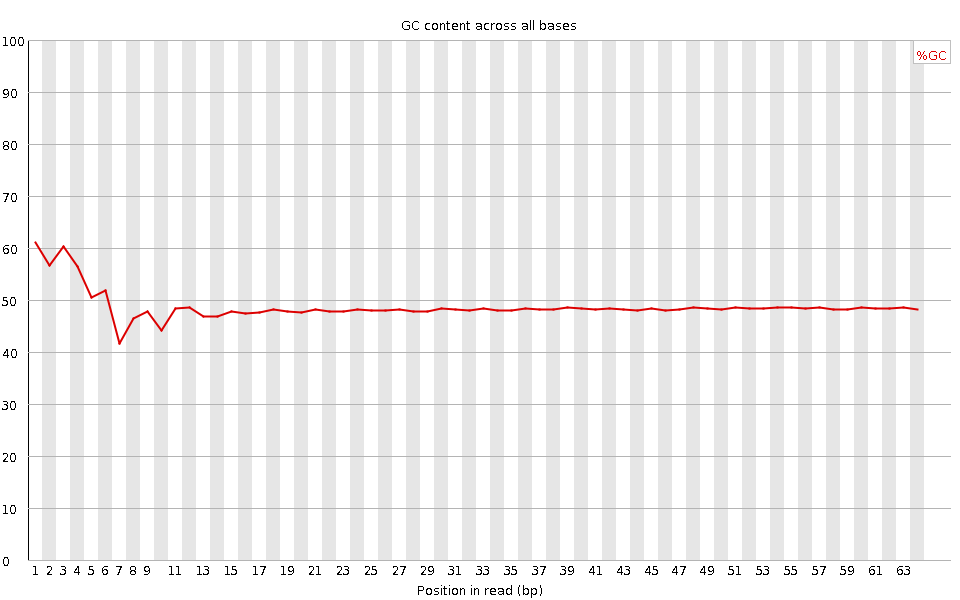
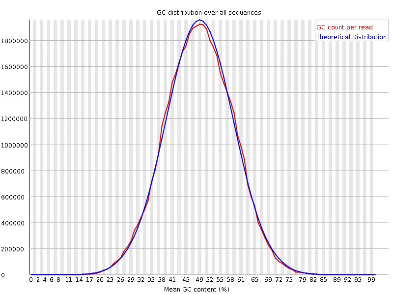
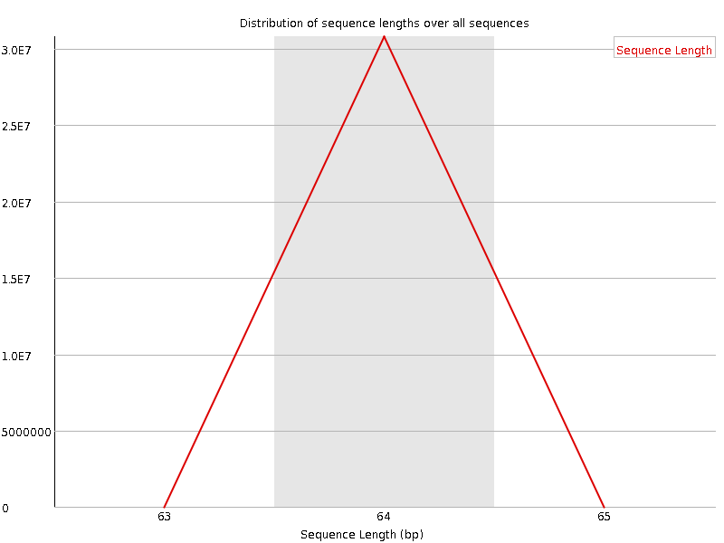
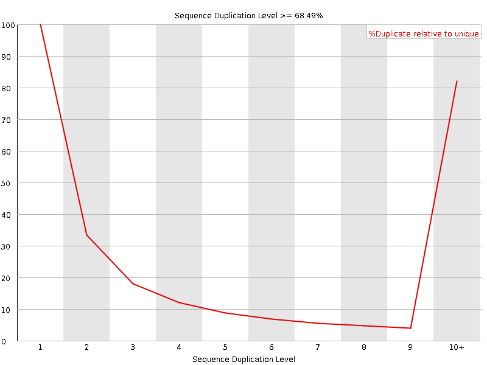
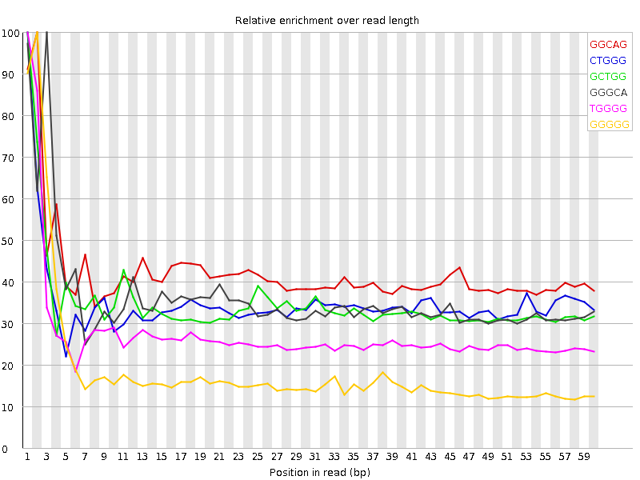

![[OK]](Icons/tick.png) Basic Statistics
Basic Statistics
| Measure | Value |
|---|---|
| Filename | SRR307903_pe_1.f.fastq |
| File type | Conventional base calls |
| Encoding | Sanger / Illumina 1.9 |
| Total Sequences | 30805465 |
| Filtered Sequences | 0 |
| Sequence length | 64 |
| %GC | 48 |
Per base sequence quality

Per sequence quality scores

![[WARN]](Icons/warning.png) Per base sequence content
Per base sequence content

![[FAIL]](Icons/error.png) Per base GC content
Per base GC content

Per sequence GC content

Per base N content

Sequence Length Distribution

Sequence Duplication Levels

Overrepresented sequences
No overrepresented sequences
Kmer Content

| Sequence | Count | Obs/Exp Overall | Obs/Exp Max | Max Obs/Exp Position |
|---|---|---|---|---|
| GGCAG | 3760125 | 2.1847336 | 5.1943803 | 2 |
| CTGGG | 3866120 | 2.1241767 | 6.0866823 | 1 |
| GCTGG | 3676045 | 2.0197432 | 5.810921 | 1 |
| GGGCA | 3147535 | 1.8288026 | 5.058943 | 3 |
| TGGGG | 3336450 | 1.7405435 | 6.3511877 | 1 |
| GGGGG | 3029700 | 1.6576006 | 8.860342 | 2 |
| GGGGA | 2967320 | 1.6369884 | 6.4208035 | 1 |
| GGGGT | 2826580 | 1.4745569 | 7.0623355 | 3 |
| GTGGG | 2785095 | 1.4529152 | 6.309871 | 1 |
| GGGGC | 2488710 | 1.4340676 | 5.4170156 | 2 |
| CGGGG | 1716415 | 0.98904866 | 7.4968014 | 1 |
| GCGGG | 1157535 | 0.6670056 | 5.671134 | 1 |